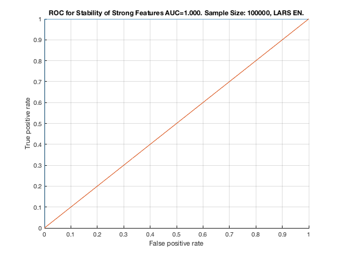

Feature Stability of Elastic Net on TIE-Net with 100000 samples.
unit_stability_type(100000, 3, "TieNet")
Figure 36. ROC for Stability of Strong Features AUC=1.000. Sample Size: 100000, LARS EN. _________________________________________________________________________________________
Table 36. Feature Stability of LARS EN on TieNet with 100000 samples.
______________________________________________________________________
SELECTED COUNTS: Strong=23, Weak=26, Irrelevant=4
TOTAL COUNTS: Strong=23, Weak=26, Irrelevant=4
Feature_Number Stability Type Path_Length N_MBS Equivalence
______________ _________ ____________ ___________ _____ ___________
1 ' 1.000 ' ' STRONG ' 1 0 1
7 ' 1.000 ' ' STRONG ' 1 0 7
8 ' 1.000 ' ' STRONG ' 2 0 7
12 ' 1.000 ' ' STRONG ' 1 0 12
18 ' 1.000 ' ' STRONG ' 1 0 18
21 ' 1.000 ' ' STRONG ' 1 2 21
19 ' 0.940 ' ' STRONG ' 2 4 18
2 ' 0.928 ' ' STRONG ' 2 8 1
13 ' 0.908 ' ' STRONG ' 2 16 12
9 ' 0.852 ' ' STRONG ' 3 24 7
22 ' 0.820 ' ' STRONG ' 2 48 21
14 ' 0.810 ' ' STRONG ' 3 72 12
3 ' 0.806 ' ' STRONG ' 4 108 1
20 ' 0.800 ' ' STRONG ' 3 162 18
10 ' 0.796 ' ' STRONG ' 4 216 7
23 ' 0.774 ' ' STRONG ' 3 324 21
11 ' 0.772 ' ' STRONG ' 4 405 7
4 ' 0.770 ' ' STRONG ' 4 540 1
5 ' 0.764 ' ' STRONG ' 3 675 1
15 ' 0.762 ' ' STRONG ' 3 900 12
16 ' 0.760 ' ' STRONG ' 2 1125 12
17 ' 0.760 ' ' STRONG ' 4 1350 12
6 ' 0.746 ' ' STRONG ' 3 1620 1
28 ' 0.608 ' ' weak ' 5 1620 28
40 ' 0.544 ' ' weak ' 3 1620 40
39 ' 0.488 ' ' weak ' 4 1620 39
38 ' 0.296 ' ' weak ' 5 1620 38
27 ' 0.218 ' ' weak ' 6 1620 27
24 ' 0.212 ' ' weak ' 4 1620 24
41 ' 0.204 ' ' weak ' 3 1620 41
29 ' 0.190 ' ' weak ' 11 1620 29
49 ' 0.186 ' ' weak ' 6 1620 49
42 ' 0.182 ' 'irrelevant' Inf 1620 42
43 ' 0.180 ' 'irrelevant' Inf 1620 43
37 ' 0.172 ' ' weak ' 6 1620 37
30 ' 0.170 ' ' weak ' 10 1620 30
51 ' 0.166 ' ' weak ' 4 1620 51
46 ' 0.160 ' ' weak ' 7 1620 46
50 ' 0.160 ' ' weak ' 5 1620 50
34 ' 0.158 ' ' weak ' 8 1620 34
36 ' 0.158 ' ' weak ' 8 1620 36
44 ' 0.150 ' 'irrelevant' Inf 1620 44
33 ' 0.134 ' ' weak ' 8 1620 33
52 ' 0.132 ' ' weak ' 4 1620 52
32 ' 0.130 ' ' weak ' 8 1620 32
26 ' 0.126 ' ' weak ' 5 1620 26
31 ' 0.120 ' ' weak ' 9 1620 31
35 ' 0.120 ' ' weak ' 7 1620 35
47 ' 0.116 ' 'irrelevant' Inf 1620 47
53 ' 0.116 ' ' weak ' 5 1620 53
45 ' 0.102 ' ' weak ' 7 1620 45
48 ' 0.094 ' ' weak ' 6 1620 48
25 ' 0.050 ' ' weak ' 6 1620 25